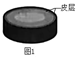
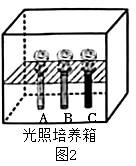
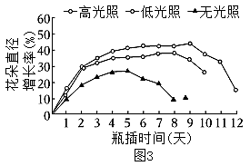
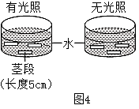

2023年北京中考生物 第31题
31. 月季切花具有极高的观赏和经济价值，但瓶插观赏期较短。研究发现茎皮层的光合作用与切花品质和观赏期有密切关系。
（1）月季切花的茎呈现绿色，图1为茎段示意图。皮层细胞的______中含有叶绿素，能吸收光能。光是光合作用的必要条件，不同光照强度下皮层光合作用强度不同。

（2）为探究茎皮层光合作用对月季切花品质和观赏期的影响，科研人员利用图2所示装置开展实验。每天测算花朵直径的增长率，直到花朵萎蔫、观赏期结束，结果如图3。


①图2中A试管不做处理，B试管用多层保鲜膜包裹，C试管用黑纸包裹，分别对应了图3中______三种条件。
②实验过程中需保证光照培养箱中______等条件一致。
③分析图3可知，皮层的光合作用可促使花朵直径增大，判断依据为______；同时可延长切花的观赏期。与无光照组相比，高光照组可将观赏期延长______天。
（3）切花常因切口处细菌感染、伤口愈合等因素，引起导管堵塞，进而导致供水不足，影响切花品质和缩短观赏期。但研究发现，茎皮层的光合作用可通过促进皮层吸水缓解这一现象。科研人员通过图4所示的实验加以验证。

①实验中茎段两端的切口需用防水胶封堵，目的是避免______对实验结果造成影响。
②测定茎段的起始质量和浸泡8小时后的质量，支持“茎皮层光合作用可以促进皮层吸水”这一结论的实验结果应为______。
（4）基于上述研究，可采用______的方法延长切花观赏期。（写出一条即可）